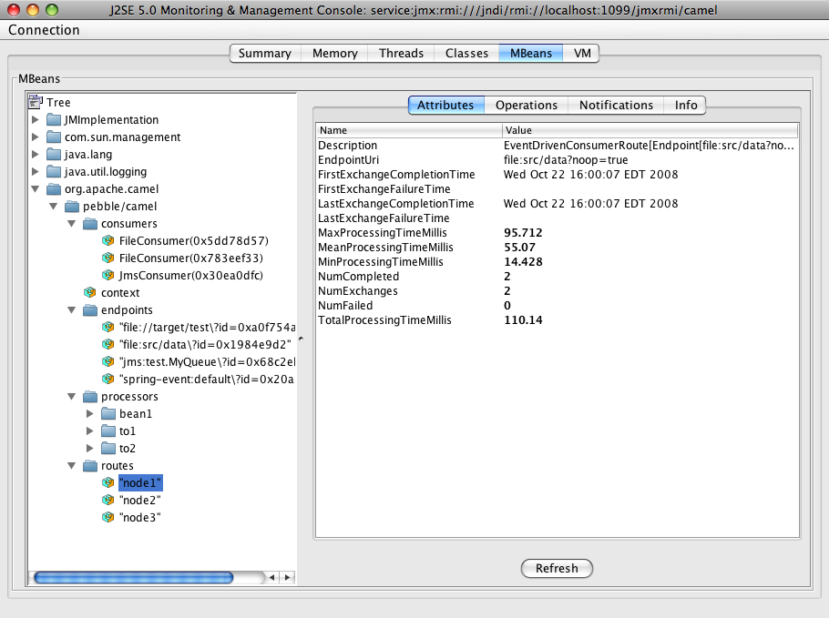
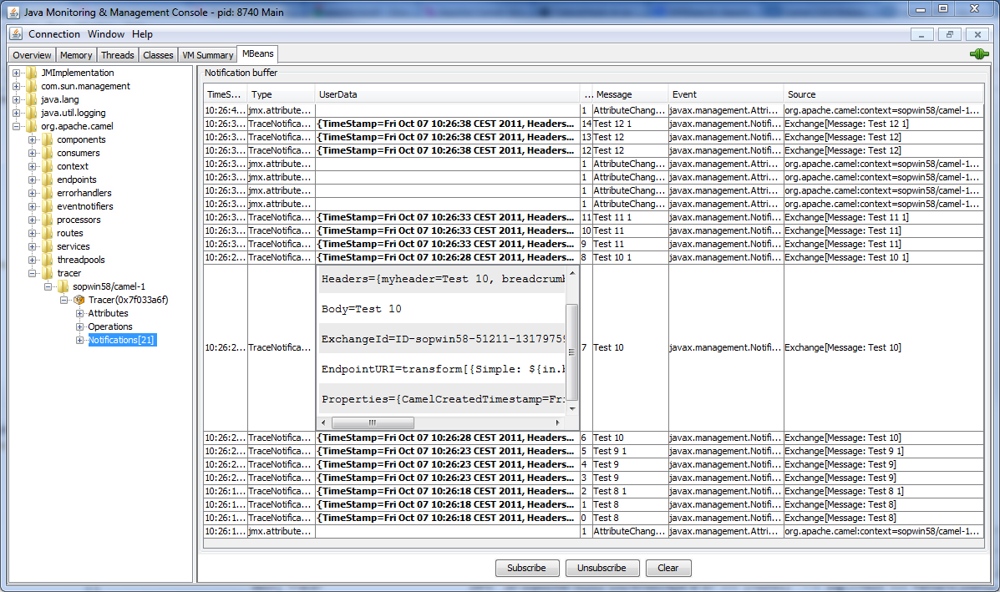

JMX
Since Camel 2.6
Camel JMX
Apache Camel has extensive support for JMX to allow you to monitor and control the Camel managed objects with a JMX client.
Camel also provides a JMX component that allows you to subscribe to MBean notifications. This page is about how to manage and monitor Camel using JMX.
Options
The JMX component has no options.
The JMX endpoint is configured using URI syntax:
jmx:serverURL
with the following path and query parameters:
Path Parameters (1 parameters):
| Name | Description | Default | Type |
|---|---|---|---|
serverURL |
Server url comes from the remaining endpoint. Use platform to connect to local JVM. |
String |
Query Parameters (30 parameters):
| Name | Description | Default | Type |
|---|---|---|---|
bridgeErrorHandler (consumer) |
Allows for bridging the consumer to the Camel routing Error Handler, which mean any exceptions occurred while the consumer is trying to pickup incoming messages, or the likes, will now be processed as a message and handled by the routing Error Handler. By default the consumer will use the org.apache.camel.spi.ExceptionHandler to deal with exceptions, that will be logged at WARN or ERROR level and ignored. |
false |
boolean |
format (consumer) |
Format for the message body. Either xml or raw. If xml, the notification is serialized to xml. If raw, then the raw java object is set as the body. |
xml |
String |
granularityPeriod (consumer) |
The frequency to poll the bean to check the monitor (monitor types only). |
10000 |
long |
monitorType (consumer) |
The type of monitor to create. One of string, gauge, counter (monitor types only). |
String |
|
objectDomain (consumer) |
Required The domain for the mbean you’re connecting to |
String |
|
objectName (consumer) |
The name key for the mbean you’re connecting to. This value is mutually exclusive with the object properties that get passed. |
String |
|
observedAttribute (consumer) |
The attribute to observe for the monitor bean or consumer. |
String |
|
exceptionHandler (consumer) |
To let the consumer use a custom ExceptionHandler. Notice if the option bridgeErrorHandler is enabled then this option is not in use. By default the consumer will deal with exceptions, that will be logged at WARN or ERROR level and ignored. |
ExceptionHandler |
|
exchangePattern (consumer) |
Sets the exchange pattern when the consumer creates an exchange. |
ExchangePattern |
|
executorService (advanced) |
To use a custom shared thread pool for the consumers. By default each consume has their own thread-pool to process and route notifications. |
ExecutorService |
|
handback (advanced) |
Value to handback to the listener when a notification is received. This value will be put in the message header with the key jmx.handback |
Object |
|
notificationFilter (advanced) |
Reference to a bean that implements the NotificationFilter. |
NotificationFilter |
|
objectProperties (advanced) |
Properties for the object name. These values will be used if the objectName param is not set |
Map |
|
reconnectDelay (advanced) |
The number of seconds to wait before attempting to retry establishment of the initial connection or attempt to reconnect a lost connection |
10 |
int |
reconnectOnConnection Failure (advanced) |
If true the consumer will attempt to reconnect to the JMX server when any connection failure occurs. The consumer will attempt to re-establish the JMX connection every 'x' seconds until the connection is made-- where 'x' is the configured reconnectionDelay |
false |
boolean |
synchronous (advanced) |
Sets whether synchronous processing should be strictly used, or Camel is allowed to use asynchronous processing (if supported). |
false |
boolean |
testConnectionOnStartup (advanced) |
If true the consumer will throw an exception if unable to establish the JMX connection upon startup. If false, the consumer will attempt to establish the JMX connection every 'x' seconds until the connection is made — where 'x' is the configured reconnectionDelay |
true |
boolean |
notifyDiffer (string) |
If true, will fire a notification when the string attribute differs from the string to compare (string monitor or consumer). By default the consumer will notify match if observed attribute and string to compare has been configured. |
false |
boolean |
notifyMatch (string) |
If true, will fire a notification when the string attribute matches the string to compare (string monitor or consumer). By default the consumer will notify match if observed attribute and string to compare has been configured. |
false |
boolean |
stringToCompare (string) |
Value for attribute to compare (string monitor or consumer). By default the consumer will notify match if observed attribute and string to compare has been configured. |
String |
|
initThreshold (counter) |
Initial threshold for the monitor. The value must exceed this before notifications are fired (counter monitor only). |
int |
|
modulus (counter) |
The value at which the counter is reset to zero (counter monitor only). |
int |
|
offset (counter) |
The amount to increment the threshold after it’s been exceeded (counter monitor only). |
int |
|
differenceMode (gauge) |
If true, then the value reported in the notification is the difference from the threshold as opposed to the value itself (counter and gauge monitor only). |
false |
boolean |
notifyHigh (gauge) |
If true, the gauge will fire a notification when the high threshold is exceeded (gauge monitor only). |
false |
boolean |
notifyLow (gauge) |
If true, the gauge will fire a notification when the low threshold is exceeded (gauge monitor only). |
false |
boolean |
thresholdHigh (gauge) |
Value for the gauge’s high threshold (gauge monitor only). |
Double |
|
thresholdLow (gauge) |
Value for the gauge’s low threshold (gauge monitor only). |
Double |
|
password (security) |
Credentials for making a remote connection |
String |
|
user (security) |
Credentials for making a remote connection |
String |
Spring Boot Auto-Configuration
When using Spring Boot make sure to use the following Maven dependency to have support for auto configuration:
<dependency>
<groupId>org.apache.camel</groupId>
<artifactId>camel-jmx-starter</artifactId>
<version>x.x.x</version>
<!-- use the same version as your Camel core version -->
</dependency>The component supports 2 options, which are listed below.
| Name | Description | Default | Type |
|---|---|---|---|
camel.component.jmx.enabled |
Enable jmx component |
true |
Boolean |
camel.component.jmx.resolve-property-placeholders |
Whether the component should resolve property placeholders on itself when starting. Only properties which are of String type can use property placeholders. |
true |
Boolean |
Activating JMX in Camel
|
Spring JAR dependency, required for Camel 2.8 or older
From Camel 2.9 onwards, the Spring JARs are no longer required to run Camel in JMX mode. |
Using JMX to manage Apache Camel
By default, JMX instrumentation agent is enabled in Camel, which means
that Camel runtime creates and registers MBean management objects with a
MBeanServer instance in the VM. This allows Camel users to instantly
obtain insights into how Camel routes perform down to the individual
processor level.
The supported types of management objects are endpoint, route, service, and processor. Some of these management objects also expose lifecycle operations in addition to performance counter attributes.
The
DefaultManagementNamingStrategy
is the default naming strategy which builds object names used for MBean
registration. By default, org.apache.camel is the domain name for all
object names created by CamelNamingStrategy. The domain name of the
MBean object can be configured by Java VM system property:
-Dorg.apache.camel.jmx.mbeanObjectDomainName=your.domain.nameOr, by adding a jmxAgent element inside the camelContext element in
Spring configuration:
<camelContext id="camel" xmlns="http://camel.apache.org/schema/spring">
<jmxAgent id="agent" mbeanObjectDomainName="your.domain.name"/>
...
</camelContext>Spring configuration always takes precedence over system properties when they both present. It is true for all JMX related configurations.
Disabling JMX instrumentation agent in Camel
You can disable JMX instrumentation agent by setting the Java VM system property as follow:
-Dorg.apache.camel.jmx.disabled=trueThe property value is treated as boolean.
Or, by adding a jmxAgent element inside the camelContext element in
Spring configuration:
<camelContext id="camel" xmlns="http://camel.apache.org/schema/spring">
<jmxAgent id="agent" disabled="true"/>
...
</camelContext>Or in Camel 2.1 its a bit easier (not having to use JVM system property) if using pure Java as you can disable it as follows:
CamelContext camel = new DefaultCamelContext();
camel.disableJMX();Locating a MBeanServer in the Java VM
Each CamelContext can have an instance of
InstrumentationAgent
wrapped inside the
InstrumentationLifecycleStrategy.
The InstrumentationAgent is the object that interfaces with a
MBeanServer
to register / unregister Camel MBeans. Multiple
CamelContexts / InstrumentationAgents can / should share a MBeanServer. By
default, Camel runtime picks the first MBeanServer returned by
MBeanServerFactory.findMBeanServer
method that matches the default domain name of org.apache.camel.
You may want to change the default domain name to match the
MBeanServer instance that you are already using in your application.
Especially, if your MBeanServer is attached to a JMX connector server,
you will not need to create a connector server in Camel.
You can configure the matching default domain name via system property.
-Dorg.apache.camel.jmx.mbeanServerDefaultDomain=<your.domain.name>Or, by adding a jmxAgent element inside the camelContext element in
Spring configuration:
<camelContext id="camel" xmlns="http://camel.apache.org/schema/spring">
<jmxAgent id="agent" mbeanServerDefaultDomain="your.domain.name"/>
...
</camelContext>If no matching MBeanServer can be found, a new one is created and the
new `MBeanServer’s default domain name is set according to the default
and configuration as mentioned above.
It is also possible to use the
PlatformMBeanServer
when it is desirable to manage JVM MBeans by setting the system
property. The MBeanServer default domain name configuration is ignored
as it is not applicable.
Starting in next release (1.5), the default
value of usePlatformMBeanServer will be changed to true. You can set
the property to false to disable using platform MBeanServer.
|
-Dorg.apache.camel.jmx.usePlatformMBeanServer=TrueOr, by adding a jmxAgent element inside the camelContext element in
Spring configuration:
<camelContext id="camel" xmlns="http://camel.apache.org/schema/spring">
<jmxAgent id="agent" usePlatformMBeanServer="true"/>
...
</camelContext>Creating JMX RMI Connector Server
JMX connector server enables MBeans to be remotely managed by a JMX
client such as JConsole; Camel JMX RMI connector server can be
optionally turned on by setting system property and the MBeanServer
used by Camel is attached to that connector server.
-Dorg.apache.camel.jmx.createRmiConnector=TrueOr, by adding a jmxAgent element inside the camelContext element in
Spring configuration:
<camelContext id="camel" xmlns="http://camel.apache.org/schema/spring">
<jmxAgent id="agent" createConnector="true"/>
...
</camelContext>JMX Service URL
The default JMX Service URL has the format:
service:jmx:rmi:///jndi/rmi://localhost:<registryPort>/<serviceUrlPath>registryPort is the RMI registry port and the default value is
1099.
You can set the RMI registry port by system property.
-Dorg.apache.camel.jmx.rmiConnector.registryPort=<port number>Or, by adding a jmxAgent element inside the camelContext element in
Spring configuration:
<camelContext id="camel" xmlns="http://camel.apache.org/schema/spring">
<jmxAgent id="agent" createConnector="true" registryPort="port number"/>
...
</camelContext>serviceUrlPath is the path name in the URL and the default value is
/jmxrmi/camel.
You can set the service URL path by system property.
-Dorg.apache.camel.jmx.serviceUrlPath=<path>|
Setting ManagementAgent settings in Java In Camel 2.4 onwards you can also set the various options on the
|
Or, by adding a jmxAgent element inside the camelContext element in
Spring configuration:
<camelContext id="camel" xmlns="http://camel.apache.org/schema/spring">
<jmxAgent id="agent" createConnector="true" serviceUrlPath="path"/>
...
</camelContext>By default, RMI server object listens on a dynamically generated port, which can be a problem for connections established through a firewall. In such situations, RMI connection port can be explicitly set by the system property.
-Dorg.apache.camel.jmx.rmiConnector.connectorPort=<port number>Or, by adding a jmxAgent element inside the camelContext element in
Spring configuration:
<camelContext id="camel" xmlns="http://activemq.apache.org/camel/schema/spring">
<jmxAgent id="agent" createConnector="true" connectorPort="port number"/>
...
</camelContext>When the connector port option is set, the JMX service URL will become:
service:jmx:rmi://localhost:<connectorPort>/jndi/rmi://localhost:<registryPort>/<serviceUrlPath>The System Properties for Camel JMX support
| Property Name | value | Description |
|---|---|---|
|
|
if is |
See more system properties in this section below: jmxAgent Properties Reference.
How to use authentication with JMX
JMX in the JDK have features for authentication and also for using secure connections over SSL. You have to refer to the SUN documentation how to use this:
JMX inside an Application Server
Tomcat 6
See this page for details about enabling JMX in Tomcat.
In short, modify your catalina.sh (or catalina.bat in Windows) file to set the following options…
set CATALINA_OPTS=-Dcom.sun.management.jmxremote \
-Dcom.sun.management.jmxremote.port=1099 \
-Dcom.sun.management.jmxremote.ssl=false \
-Dcom.sun.management.jmxremote.authenticate=falseJBoss AS 4
By default JBoss creates its own MBeanServer. To allow Camel to expose
to the same server follow these steps:
-
Tell Camel to use the Platform
MBeanServer(This defaults to true in Camel 1.5)
<camel:camelContext id="camelContext">
<camel:jmxAgent id="jmxAgent" mbeanObjectDomainName="org.yourname" usePlatformMBeanServer="true" />
</camel:camelContext>-
Alter your JBoss instance to use the Platform
MBeanServer.
Add the following property to your JAVA_OPTS by editing run.sh or
run.conf -Djboss.platform.mbeanserver. See
http://wiki.jboss.org/wiki/JBossMBeansInJConsole
WebSphere
Alter the mbeanServerDefaultDomain to be WebSphere:
<camel:jmxAgent id="agent" createConnector="true" mbeanObjectDomainName="org.yourname" usePlatformMBeanServer="false" mbeanServerDefaultDomain="WebSphere"/>Oracle OC4j
The Oracle OC4J J2EE application server will not allow Camel to access
the platform MBeanServer. You can identify this in the log as Camel
will log a WARNING.
xxx xx, xxxx xx:xx:xx xx org.apache.camel.management.InstrumentationLifecycleStrategy onContextStart
WARNING: Could not register CamelContext MBean
java.lang.SecurityException: Unauthorized access from application: xx to MBean: java.lang:type=ClassLoading
at oracle.oc4j.admin.jmx.shared.UserMBeanServer.checkRegisterAccess(UserMBeanServer.java:873)To resolve this you should disable the JMX agent in Camel, see section Disabling JMX instrumentation agent in Camel.
Advanced JMX Configuration
The Spring configuration file allows you to configure how Camel is exposed to JMX for management. In some cases, you could specify more information here, like the connector’s port or the path name.
Example:
<camelContext id="camel" xmlns="http://camel.apache.org/schema/spring">
<jmxAgent id="agent" createConnector="true" registryPort="2000" mbeanServerDefaultDomain="org.apache.camel.test"/>
<route>
<from uri="seda:start"/>
<to uri="mock:result"/>
</route>
</camelContext>If you wish to change the Java 5 JMX settings you can use various JMX system properties
For example you can enable remote JMX connections to the Sun JMX connector, via setting the following environment variable (using set or export depending on your platform). These settings only configure the Sun JMX connector within Java 1.5+, not the JMX connector that Camel creates by default.
SUNJMX=-Dcom.sun.management.jmxremote=true -Dcom.sun.management.jmxremote.port=1616 \
-Dcom.sun.management.jmxremote.authenticate=false -Dcom.sun.management.jmxremote.ssl=false(The SUNJMX environment variable is simple used by the startup script for Camel, as additional startup parameters for the JVM. If you start Camel directly, you’ll have to pass these parameters yourself.)
jmxAgent Properties Reference
| Spring property | System property | Default Value | Description |
|---|---|---|---|
|
The JMX agent name, and it is not optional |
||
|
|
|
If |
|
|
|
The default JMX domain of the |
|
|
|
The JMX domain that all object names will use |
|
|
|
If
we should create a JMX connector (to allow remote management) for the
|
|
|
|
The port that the JMX RMI registry will use |
|
|
-1 (dynamic) |
The port that the JMX RMI server will use |
|
|
|
The path that JMX connector will be registered under |
|
|
|
Camel 2.0: If this option is enabled then only processors with a custom id set will be registered. This allows you to filer out unwanted processors in the JMX console. |
|
|
Camel 2.1: Configures the level for whether performance statistics is enabled for the MBean. See section Configuring level of granularity for performance statistics for more details. From Camel 2.16 onwards the All option is renamed to Default, and a new Extended option has been introduced which allows gathered additional runtime JMX metrics. |
|
|
|
Camel
2.13: Whether to include the hostname in the MBean naming. From Camel
2.13 onwards this is default |
|
|
|
|
Camel 2.16: Whether to use hostname or IP Address in the service url when creating the remote connector. By default the hostname will be used. |
|
|
|
Camel 2.16:Whether load statistics is enabled (gathers load statistics using a background thread per CamelContext). |
|
|
|
Camel 2.16: Whether endpoint runtime statistics is enabled (gathers runtime usage of each incoming and outgoing endpoints). |
Configuring whether to register MBeans always, for new routes or just by default
Since Camel 2.7
Camel now offers 2 settings to control whether or not to register mbeans
| Option | Default | Description |
|---|---|---|
|
|
If enabled then MBeans is always registered. |
|
|
If enabled then adding new routes after CamelContext has been started will also register MBeans from that given route. |
By default Camel registers MBeans for all the routes configured when its
starting. The registerNewRoutes option control if MBeans should also
be registered if you add new routes thereafter. You can disable this, if
you for example add and remove temporary routes where management is not
needed.
Be a bit caution to use the registerAlways option when using dynamic
EIP patterns such as the
Recipient List having unique endpoints. If so
then each unique endpoint and its associated services/producers would
also be registered. This could potential lead to system degration due
the rising number of mbeans in the registry. A MBean is not a
light-weight object and thus consumes memory.
Monitoring Camel using JMX
Using JConsole to monitor Camel
The CamelContext should appear in the list of local connections, if
you are running JConsole on the same host as Camel.
To connect to a remote Camel instance, or if the local process does not
show up, use Remote Process option, and enter an URL. Here is an example
localhost URL:service:jmx:rmi:///jndi/rmi://localhost:1099/jmxrmi/camel.
Using the Apache Camel with JConsole:

Which endpoints are registered
In Camel 2.1 onwards only singleton endpoints are registered as
the overhead for non singleton will be substantial in cases where
thousands or millions of endpoints are used. This can happens when using
a Recipient List EIP or from a
ProducerTemplate that sends a lot of messages.
How to use the JMX NotificationListener to listen the camel events?
The Camel notification events give a coarse grained overview what is happening. You can see lifecycle event from context and endpoints and you can see exchanges being received by and sent to endpoints.
From Camel 2.4 you can use a custom JMX NotificationListener to listen the camel events.
First you need to set up a JmxNotificationEventNotifier before you start
the CamelContext:
// Set up the JmxNotificationEventNotifier
notifier = new JmxNotificationEventNotifier();
notifier.setSource("MyCamel");
notifier.setIgnoreCamelContextEvents(true);
notifier.setIgnoreRouteEvents(true);
notifier.setIgnoreServiceEvents(true);
CamelContext context = new DefaultCamelContext(createRegistry());
context.getManagementStrategy().addEventNotifier(notifier);Second you can register your listener for listening the event:
// register the NotificationListener
ObjectName on = ObjectName.getInstance("org.apache.camel:context=camel-1,type=eventnotifiers,name=JmxEventNotifier");
MyNotificationListener listener = new MyNotificationListener();
context.getManagementStrategy().getManagementAgent().getMBeanServer().addNotificationListener(on,
listener,
new NotificationFilter() {
private static final long serialVersionUID = 1L;
public boolean isNotificationEnabled(Notification notification) {
return notification.getSource().equals("MyCamel");
}
}, null);Using the Tracer MBean to get fine grained tracing
Additionally to the coarse grained notifications above Camel 2.9.0 support JMX Notification for fine grained trace events.
These can be found in the Tracer MBean. To activate fine grained tracing you first need to activate tracing on the context or on a route.
This can either be done when configuring the context or on the context / route MBeans.
As a second step you have to set the jmxTraceNotifications attribute
to true on the tracer. This can again be done when configuring the
context or at runtime on the tracer MBean.
Now you can register for TraceEvent Notifications on the Tracer MBean using JConsole. There will be one Notification for every step on the route with all exchange and message details:

Using JMX for your own Camel Code
Registering your own Managed Endpoints
Since Camel 2.0
You can decorate your own endpoints with Spring managed annotations
@ManagedResource to allow to register them in the Camel MBeanServer
and thus access your custom MBeans using JMX.
|
In Camel 2.1 we have changed this to apply other than just
endpoints but then you need to implement the interface
|
For example we have the following custom endpoint where we define some options to be managed:
@ManagedResource(description = "Our custom managed endpoint")
public class CustomEndpoint extends MockEndpoint implements ManagementAware<CustomEndpoint> {
public CustomEndpoint(final String endpointUri, final Component component) {
super(endpointUri, component);
}
public Object getManagedObject(CustomEndpoint object) {
return this;
}
public boolean isSingleton() {
return true;
}
protected String createEndpointUri() {
return "custom";
}
@ManagedAttribute
public String getFoo() {
return "bar";
}
@ManagedAttribute
public String getEndpointUri() {
return super.getEndpointUri();
}
}Notice from Camel 2.9 onwards its encouraged to use the
@ManagedResource, @ManagedAttribute, and @ManagedOperation from
the org.apache.camel.api.management package. This allows your custom
code to not depend on Spring JARs.
Programming your own Managed Services
Since Camel 2.1
Camel now offers to use your own MBeans when registering services for
management. What that means is for example you can develop a custom
Camel component and have it expose MBeans for endpoints, consumers and
producers etc. All you need to do is to implement the interface
org.apache.camel.spi.ManagementAware and return the managed object
Camel should use.
Now before you think oh boys the JMX API is really painful and terrible,
then yeah you are right. Lucky for us Spring though too and they created
a range of annotations you can use to export management on an existing
bean. That means that you often use that and just return this in the
getManagedObject from the ManagementAware interface. For an example
see the code example above with the CustomEndpoint.
Now in Camel 2.1 you can do this for all the objects that Camel registers for management which are quite a bunch, but not all.
For services which do not implement this ManagementAware interface
then Camel will fallback to using default wrappers as defined in the
table below:
| Type | MBean wrapper |
|---|---|
|
|
|
|
|
|
|
|
|
|
|
|
|
|
|
|
|
|
In addition to that there are some extended wrappers for specialized types such as:
| Type | MBean wrapper |
|---|---|
|
|
|
|
|
|
|
|
|
|
And in the future we will add additional wrappers for more EIP patterns.
ManagementNamingStrategy
Since Camel 2.1
Camel provides a pluggable API for naming strategy by
org.apache.camel.spi.ManagementNamingStrategy. A default
implementation is used to compute the MBean names that all MBeans are
registered with.
Management naming pattern
Since Camel 2.10
From Camel 2.10 onwards we made it easier to configure a naming
pattern for the MBeans. The pattern is used as part of the ObjectName
as they key after the domain name.
By default Camel will use MBean names for the ManagedCamelContextMBean
as follows:
org.apache.camel:context=localhost/camel-1,type=context,name=camel-1And from Camel 2.13 onwards the hostname is not included in the MBean names, so the above example would be as follows:
org.apache.camel:context=camel-1,type=context,name=camel-1If you configure a name on the CamelContext then that name is part of
the ObjectName as well. For example if we have
<camelContext id="myCamel" ...>Then the MBean names will be as follows:
org.apache.camel:context=localhost/myCamel,type=context,name=myCamelNow if there is a naming clash in the JVM, such as there already exists
a MBean with that given name above, then Camel will by default try to
auto correct this by finding a new free name in the JMXMBeanServer by
using a counter. As shown below the counter is now appended, so we have
myCamel-1 as part of the ObjectName:
org.apache.camel:context=localhost/myCamel-1,type=context,name=myCamelThis is possible because Camel uses a naming pattern by default that supports the following tokens:
-
camelId= the CamelContext id (eg the name) -
name- same ascamelId -
counter- an incrementing counter* bundleId- the OSGi bundle id (only for OSGi environments) -
symbolicName- the OSGi symbolic name (only for OSGi environments) -
version- the OSGi bundle version (only for OSGi environments)
The default naming pattern is differentiated between OSGi and non-OSGi as follows:
-
non OSGI:
name -
OSGi:
bundleId-name -
OSGi Camel 2.13:
symbolicName
However if there is a naming clash in the JMXMBeanServer then Camel
will automatic fallback and use the counter in the pattern to remedy
this. And thus the following patterns will then be used:
-
non OSGI:
name-counter -
OSGi:
bundleId-name-counter -
OSGi Camel 2.13:
symbolicName-counter
If you set an explicit naming pattern, then that pattern is always used, and the default patterns above is not used.
This allows us to have full control, very easily, of the naming for both
the CamelContext id in the Registry as well the
JMX MBeans in the JMXMBeanRegistry.
From Camel 2.15 onwards you can configure the default management name pattern using a JVM system property, to configure this globally for the JVM. Notice that you can override this pattern by configure it explicit, as shown in the examples further below.
Set a JVM system property to use a default management name pattern that prefixes the name with cool.
System.setProperty(JmxSystemPropertyKeys.MANAGEMENT_NAME_PATTERN, "cool-#name#");So if we want to explicit name both the CamelContext and to use fixed
MBean names, that do not change (eg has no counters), then we can use
the new managementNamePattern attribute:
<camelContext id="myCamel" managementNamePattern="#name#">Then the MBean names will always be as follows:
org.apache.camel:context=localhost/myCamel,type=context,name=myCamelIn Java, you can configure the managementNamePattern as follows:
context.getManagementNameStrategy().setNamePattern("#name#");You can also use a different name in the managementNamePattern than
the id, so for example we can do:
<camelContext id="myCamel" managementNamePattern="coolCamel">You may want to do this in OSGi environments in case you do not want the OSGi bundle id as part of the MBean names. As the OSGi bundle id can change if you restart the server, or uninstall and install the same application. You can then do as follows to not use the OSGi bundle id as part of the name:
<camelContext id="myCamel" managementNamePattern="#name#">Note this requires that myCamel is unique in the entire JVM. If you
install a 2nd Camel application that has the same CamelContext id and
managementNamePattern then Camel will fail upon starting, and report a
MBean already exists exception.
ManagementStrategy
Since Camel 2.1
Camel now provides a totally pluggable management strategy that allows
you to be 100% in control of management. It is a rich interface with
many methods for management. Not only for adding and removing managed
objects from the MBeanServer, but also event notification is provided
as well using the org.apache.camel.spi.EventNotifier API. What it
does, for example, is make it easier to provide an adapter for other
management products. In addition, it also allows you to provide more
details and features that are provided out of the box at Apache.
Configuring level of granularity for performance statistics
Since Camel 2.1
You can now set a pre set level whether performance statistics is enabled or not when Camel start ups. The levels are
-
Extended- As default but with additional statistics gathered during runtime such as fine grained level of usage of endpoints and more. This options requires Camel 2.16 -
All/Default- Camel will enable statistics for both routes and processors (fine grained). From Camel 2.16 onwards the All option was renamed to Default. -
RoutesOnly- Camel will only enable statistics for routes (coarse grained) -
Off- Camel will not enable statistics for any.
From Camel 2.9 onwards the performance statistics also include average
load statistics per CamelContext and Route MBeans. The statistics is
average load based on the number of in-flight exchanges, on a per 1, 5,
and 15 minute rate. This is similar to load statistics on Unix systems.
Camel 2.11 onwards allows you to explicit disable load performance
statistics by setting loadStatisticsEnabled=false on the <jmxAgent>.
Note that it will be off if the statics level is configured to off as
well. From Camel 2.13 onwards the load performance statistics is by
default disabled. You can enable this by
setting loadStatisticsEnabled=true on the <jmxAgent>.
At runtime you can always use the management console (such as JConsole) to change on a given route or processor whether its statistics are enabled or not.
|
What does statistics enabled mean? Statistics enabled means that Camel will do fine grained performance statistics for that particular MBean. The statistics you can see are many, such as: number of exchanges completed/failed, last/total/mina/max/mean processing time, first/last failed time, etc. |
Using Java DSL you set this level by:
// only enable routes when Camel starts
context.getManagementStrategy().setStatisticsLevel(ManagementStatisticsLevel.RoutesOnly);And from Spring DSL you do:
<camelContext id="camel" xmlns="http://camel.apache.org/schema/spring">
<jmxAgent id="agent" statisticsLevel="RoutesOnly"/>
...
</camelContext>Hiding sensitive information
Since Camel 2.12
By default, Camel enlists MBeans in JMX such as endpoints configured using URIs. In this configuration, there may be sensitive information such as passwords.
This information can be hidden by enabling the mask option as shown
below:
Using Java DSL you turn this on by:
// only enable routes when Camel starts
context.getManagementStrategy().getManagementAgent().setMask(true);And from Spring DSL you do:
<camelContext id="camel" xmlns="http://camel.apache.org/schema/spring">
<jmxAgent id="agent" mask="true"/>
...
</camelContext>This will mask URIs having options such as password and
passphrase, and use xxxxxx as the replacement value.
Declaring which JMX attributes and operations to mask
On the org.apache.camel.api.management.ManagedAttribute and
org.apache.camel.api.management.ManagedOperation, the attribute mask
can be set to true to indicate that the result of this JMX
attribute/operation should be masked (if enabled on JMX agent, see
above).
For example, on the default managed endpoints from camel-core
org.apache.camel.api.management.mbean.ManagedEndpointMBean, we have
declared that the EndpointUri JMX attribute is masked:
@ManagedAttribute(description = "Endpoint URI", mask = true)
String getEndpointUri();